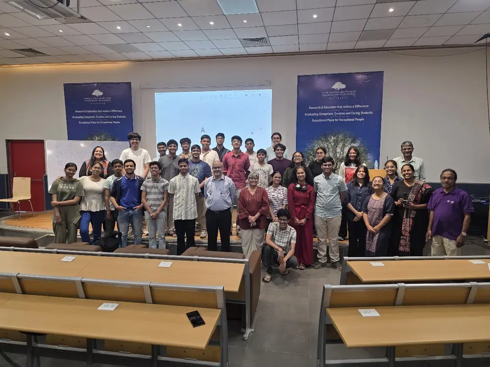
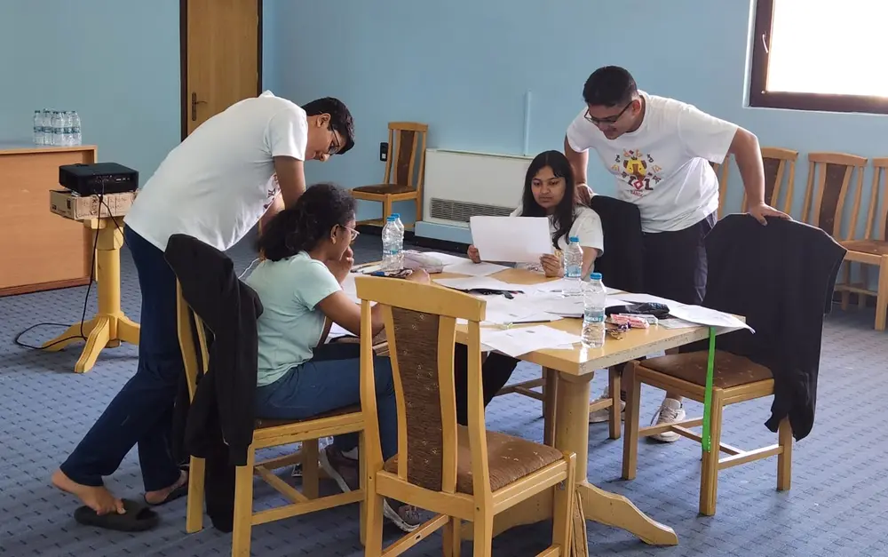
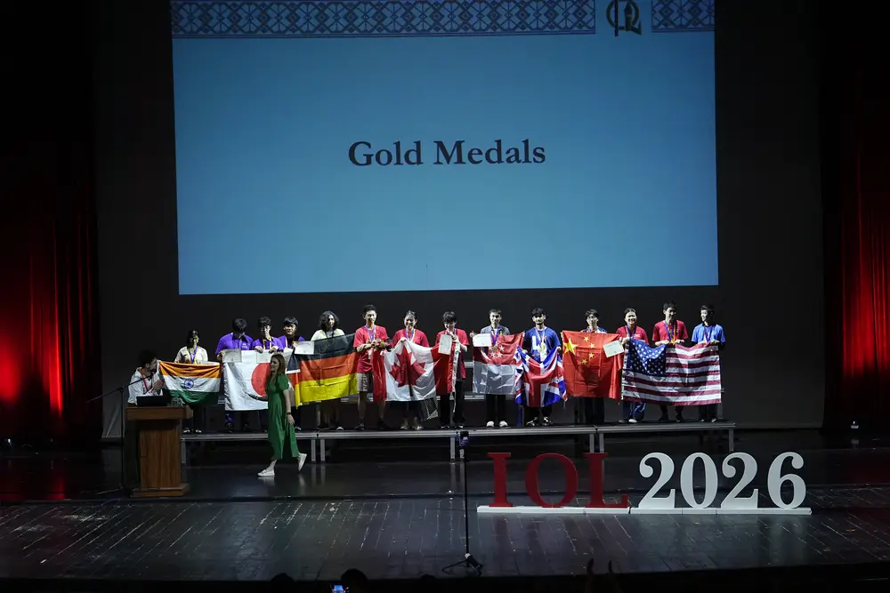
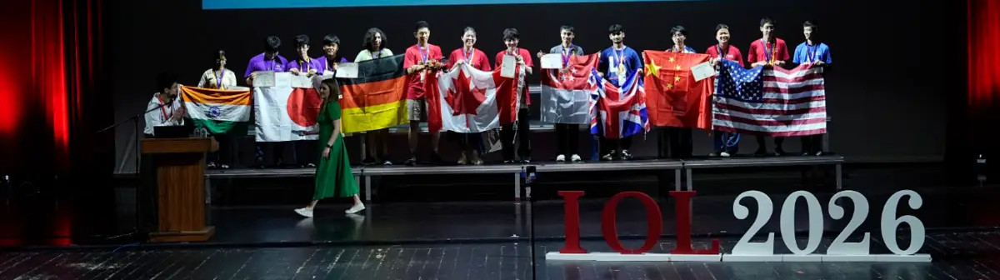

What's PLO ?

The Panini Linguistics Olympiad is the Indian national program for the selection and training of the candidates who represent India at the International Linguistics Olympiad (IOL). It also aims to create awareness of linguistics amongst students of the country, and to popularize the fields of linguistics and computational linguistics as areas of further study and research.
The program is coordinated by Microsoft Research Labs India, International Institute of Information Technology Hyderabad, JNU Delhi and the University of Mumbai, and is actively supported by regional coordinators across the country including Chennai Mathematical Institute, IIT Guwahati, SNLTR Kolkata, and IIT Patna.
PLO Round 1
The PLO Round 1 is a national level test which typically comprises of about 5-6 problems to be solved in 4 hrs. These problems are all self-contained, i.e. unlike other competitions, all the data you need to crack the whole thing is in the problem itself. You are expected to sharpen logic and develop your own techniques to solve problems from languages all over the world and uncover new features that you might not have thought of before! (In those 4 hrs itself.)
Thus, it also touches on the aspect of making you aware of what linguistics as a field is and how interesting it can get. It gets one thinking on how to scientifically approach something like a language, which they have been in contact with ‘forever’. After PLO, students are enabled to look for patterns around them in languages and how they function.
Don’t fret on preparation. If you still want to, feel free to explore the collection of past PLO problems. They are arranged by their levels of difficulty, so you can start with the light green problems and when you feel confident enough, move on to the darker shades.
PLO Round 2

Round 2 is typically a 7 to 10 day camp for the top 25-30 seniors and 5-10 juniors selected in that year. It was hosted by Microsoft Research Lab, Bangalore till 2015, after which the International Institute of Information Technology, Hyderabad took over.
At this camp, some of the top linguists and computational linguists introduce linguistics in its full glory, covering areas like phonology, semantics, historical linguistics, computational linguistics etc., while also training the students for the Olympiad, where you can solve some cool Olympiad problems based on what you learn in the lectures. In between this week of fun, contestants compete in a mid test and an end test which determine whether they are selected to participate in the IOL.
To look at past results and stats of PLO, follow this link.
What's IOL ?

Since the mid-1960s, problem-solving competitions in linguistics for secondary school students have been taking place, mainly in Russia, Bulgaria and other eastern European countries. In recent years, the idea of the Linguistics Olympiads has spread to Western Europe, North America, Asia and Australia. Winners of the regional competitions qualify for the International Linguistics Olympiad (IOL), which has taken place annually since 2003.
As would be expected, one faces even more intriguing, compelling and creative problems at IOL, from cracking how Barcodes are made to how Emojis are represented in Indonesian, and from how to write poems in Somali’s Masafo meter to unlocking river based navigation systems of Sulawesi.
Once you have made it to Team India Saffron or Green, apart from the training sessions and the pre-departure camp, the best preparation possible is to attempt as many past problems as you can. Find past IOL questions as well as samples at ioling.org.
IOL 2027 will be held in Thailand from 21 – 28 July 2027.

To see how India has performed @IOL over the years, follow this link.
What's APLO ?
The Asia Pacific Linguistics Olympiad (APLO) is a regional linguistics olympiad with the aim of escalating attention to language and linguistics in the Asia Pacific region. It is similar to the International Linguistics Olympiad in spirit, and the nature and style of the problems.
APLO is not a contest where students from different countries physically meet in one place. Instead, all contestants compete in their home country on the same day.
In India
APLO is part of Round 2 of PLO: top participants from Round 1 take the APLO in March – April 2027. Follow the link to the Official APLO Website here.